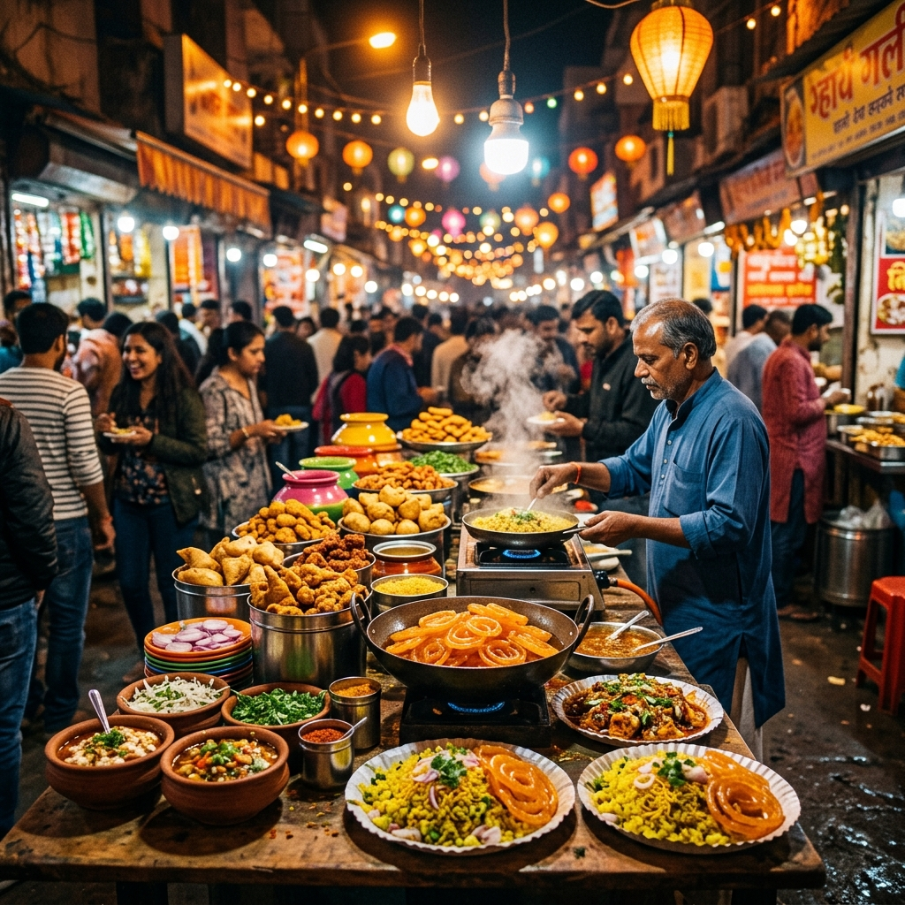
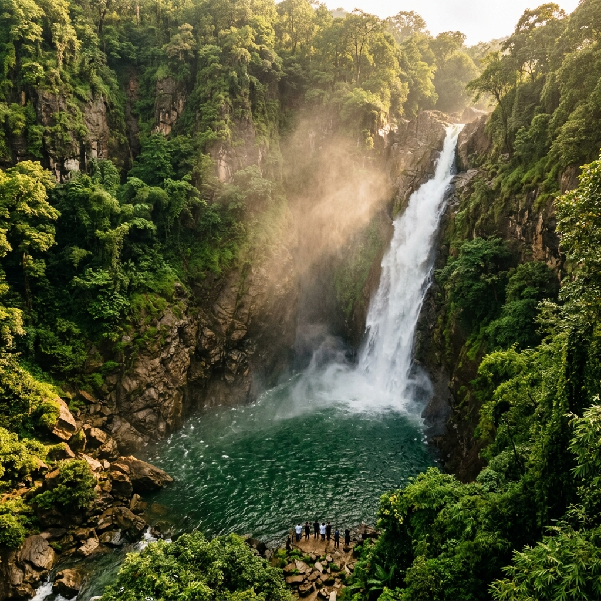
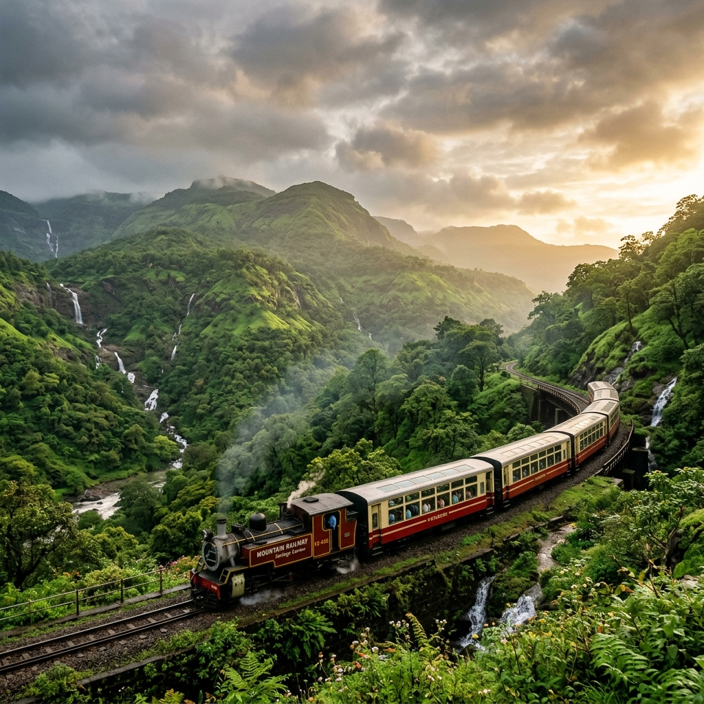
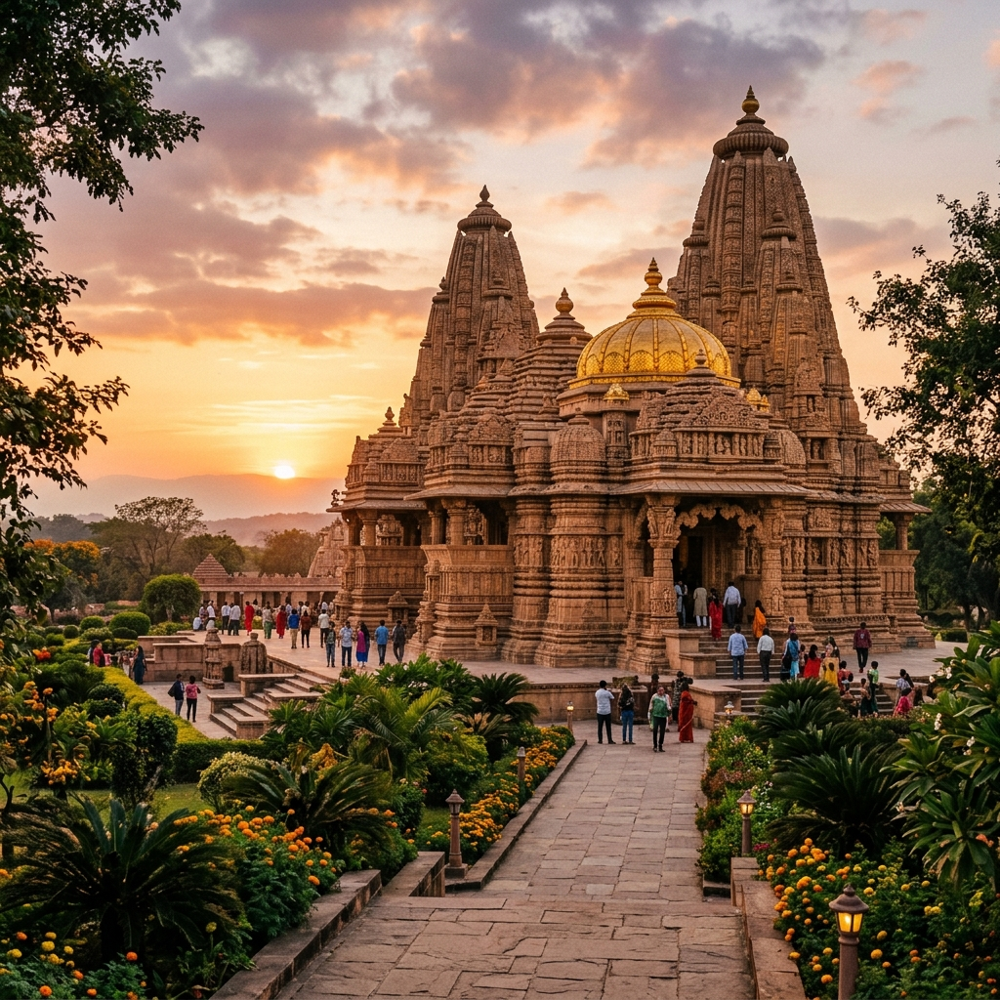

🍛 Street Food
Sarafa & Chappan Dukan
Indore's twin food paradises. From the legendary night market at Sarafa Bazaar to the 56-shop wonderland of Chappan Dukan.
CultureRoam uses Pollinations.ai for free AI (no key needed!). Optionally add a free Groq key for Llama 3.3 70B as backup.
Free at console.groq.com — no credit card required
GenAI-powered travel discovery — from Indore's legendary street food scene to monsoon waterfalls, heritage trains, and hidden cultural gems. Your authentic Indian journey starts here.
AI-Curated Experiences
India's cleanest city and food capital — a perfect blend of culture, cuisine, nature, and heritage

Indore's twin food paradises. From the legendary night market at Sarafa Bazaar to the 56-shop wonderland of Chappan Dukan.

⭐ Top PickA 300-foot plunge into emerald pools. Monsoon transforms these waterfalls into breathtaking curtains of mist and thunder.

A legendary monsoon ritual. This scenic Vistadome train winds 10km through tunnels and bridges over the Vindhya Range.

The famous Khajrana Ganesh Temple draws millions, while Lal Baag Palace echoes the opulence of Holkar rulers.
Culinary Heritage
Named India's cleanest city 7 times, Indore is also the undisputed food capital of Madhya Pradesh
A jewellery market by day, Sarafa transforms after 8 PM into one of India's most electrifying street food experiences. Vendors line the streets serving hundreds of iconic dishes under brilliant lights.
Grated corn slow-cooked in milk & spices. Indore's signature — a must-try.
Ultra-soft vadas served with dramatic flair — bowls tossed in the air!
Crispy spiced fried yam — a beloved seasonal Indori street snack.
Mashed potato stuffed with grated coconut, deep-fried to golden perfection.
Crispy spirals of jalebi drenched in thick creamy rabdi. Sweet perfection.
Multiple varieties of the spiciest chaats you'll find anywhere in India.
Named after its 56 legendary stalls, this area is Indore's modern food hub — accessible day and evening, catering to every craving from hot dogs to elaborate desserts.
The legendary vegetarian hot dog — a Chappan icon with its own devoted following.
The original home of Kopra Patties — kachori and khaman also divine.
Famous for Poha-Jalebi and creative pani puri variants that locals swear by.
Elaborate desserts — layers of vermicelli, rose syrup, and rich kulfi ice cream.
Indore mornings are a ritual. The iconic Poha-Jalebi breakfast is a cultural institution — locals gather at roadside stalls for this beloved combination that defines the city's culinary soul.
The quintessential Indore breakfast — fluffy pressed rice paired with crispy sweet jalebi.
Flaky deep-fried pastries served with spiced potato curry — a morning classic.
Sprouted white peas in spicy gravy topped with sev and onions. Hearty and warming.
Monsoon Magic
July–September transforms the Vindhya hills around Indore into a lush, cascading paradise
India's most dramatic monsoon waterfall plunges into a deep gorge called "gateway to the underworld." Best July–August when it's at full thundering force.
Three cascading tiers of waterfalls surrounded by lush greenery. Perfect for families and photographers — more accessible and serene than Patalpani.
A dense wildlife sanctuary that bursts into vivid life during monsoon. Spot deer and exotic birds while trekking through emerald forest trails.
The birthplace of Lord Parshuram according to Hindu mythology. A beautiful hill station with panoramic views over the Vindhya ranges.
A breathtaking valley carpeted with thousands of lotus flowers. During monsoon, the water levels rise and create a surreal, mirror-like landscape.
Gidiya Khoh at 600 feet and the mysterious Chidiya Bhadak — lesser-known waterfalls for adventurous travelers who seek solitude and raw nature.
Monsoon Special
Every monsoon, the legendary Patalpani–Kalakund Heritage Train awakens. This scenic 10 km journey through the mist-covered Vindhya Range is Indore's most iconic cultural experience — tunnels, bridges, waterfalls, and panoramic views from Vistadome coaches.
Glass-roof panoramic carriages for unobstructed views
Passes through tunnels, bridges, and lush green hills
Runs weekends in July–September via IRCTC booking
Patalpani to Kalakund through pristine wilderness
Your AI Travel Companion
Get personalized itineraries, local tips, hidden gems, cultural insights, and immersive stories
Suggested Questions
✅ AI active — ask me anything about India!